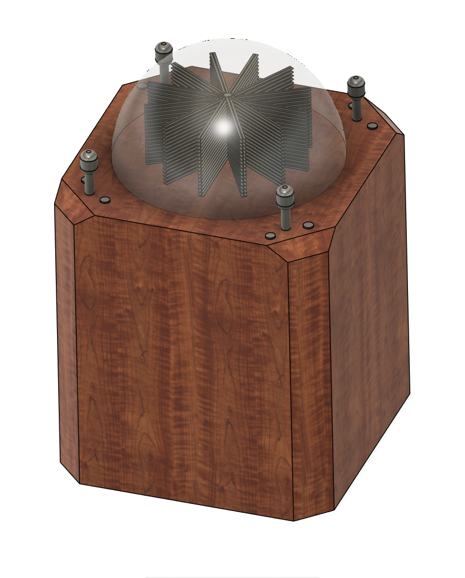

SHT 1/2
Background
I've been interested in Persistence-of-Vision-based displays for years. You may be familiar with the LED fan displays used in advertising and other signage. They consist of an LED strip mounted on a fan blade. As the blade spins, the LEDs rapidly change color — resulting in an image being displayed in midair.
The appearance of these LED fan displays is similar to a sci-fi hologram, and most people agree that they look very cool. I wanted to build one, but I felt like this technology could use another dimension. So I began work on the Tesseract 3D display, which is essentially a stack of these 2D advertising displays.

SHT 2/2
First Steps
The initial design was inspired by a cocktail arcade cabinet. Four joysticks and buttons allow four players to interact with a game running on the 3D display. A polycarbonate dome protects the users from the rapidly-spinning stack of LED blades.
An important step in constructing anything complicated is diagramming the functionality and system architecture. This helps me catch design oversights before I touch a CAD program or spare parts drawer.
DET A — ARCHITECTURE
General design
The Tesseract has 2 main components: the spinning side and the static side. The spinning side contains the LEDs which are spun to create the visual effect of solid 3D images. The static side contains power supplies, controllers, and mechanical mounting components needed to power, control, and protect the spinning side.
Each LED blade consists of an ESP32-S3-based embedded system and 180 RGB LEDs. The LED blades are controlled over SPI, and also accept a SYNC signal that is generated when the spinning side passes a "flag" on the static side.
A brushless motor and a VESC controller intended for electric bike applications provides the torque needed to spin up the display.
A custom slip ring transfers power between the static side and the spinning side via a set of graphite brushes.
Expecting the slip ring to be electrically noisy, I opted for a wireless control scheme for transmitting data from the static to spinning side.
Click any thumbnail to view the full image
DET B — LED LAYOUT
LED fan blade layout
The initial arcade-inspired display mockup also included this LED fan blade layout: 12 stacks of blades are attached to a central axis.
This design provided some space between the LED blades, allowing LEDs in deeper parts of the display volume to be visible.
In practice, I didn't really like this design. The opaque LED blade PCBs would block too many of the LEDs from other spinning blades.
I used OpenSCAD to make a few animated mockups, showing what the LED fan stack would look like through a full rotation. Then, I picked a layout that seemed to provide a good viewing angle to all LED blade layers.
The yellow layout in the animation is what I settled on, and I am pretty happy with how the spiral layout preserves much of the viewing angles of LED strips deep in the display.
DET C — ENCLOSURE
Dome sweet dome
With the initial design figured out, I promptly ran into sourcing problems. In order for this to be remotely safe, a polycarbonate dome needs to cover the spinning LED blades.
And, a custom polycarbonate dome of the size I planned would cost nearly $1000. Acrylic is more common, cheaper, and more transparent, but often shatters under impact — not ideal for this use case!
I ended up finding a solution in an unlikely place: the old Cyclone arcade game. I bought a Cyclone machine from an arcade game warehouse, Dayton Arcades and More.
That solved the dome sourcing issue, but now I had to redesign the device. Scaling up my arcade cabinet design to fit this massive dome would mean a huge cabinet, and I do need this to be movable for travel.
Combining the new spiral LED layout and new (to me) dome, I quickly designed a new circular cabinet, with weight-reducing speed holes. In the last image of this section's gallery, you can also see the slip ring mockup, planned motor placement, and twin LED fan blade supports. The body of the cabinet will be made out of 3/4" plywood, and is designed to slot together for easy assembly.

{kind=link}
{kind=link}
{kind=link}
{kind=link}
{kind=link}
{kind=link}
{kind=link}
{kind=link}